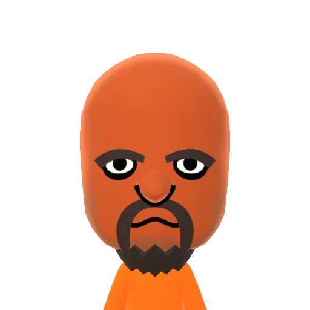

Les Mii sont des avatars personnalisables utilisés sur les consoles de jeu Nintendo, comme la Wii, la Nintendo 3DS, la Wii U et la Nintendo Switch. Ils permettent aux utilisateurs de créer des personnages uniques en ajustant différents traits faciaux, coiffures, vêtements et accessoires. Les Mii peuvent être utilisés dans divers jeux Nintendo pour représenter les joueurs, et certains jeux permettent même aux Mii de participer activement en tant que personnages principaux. Ils sont devenus emblématiques pour la convivialité et la personnalisation sur les plateformes de jeu Nintendo.

Il existe aussi des mii connus comme Matt. Matt est un personnage Mii qui est devenu célèbre grâce au jeu "Wii Sports" et plus spécifiquement dans l'épreuve de boxe. Il est considéré comme l'un des adversaires les plus difficiles à battre dans ce jeu, réputé pour sa grande habileté et sa difficulté accrue par rapport aux autres Mii. En raison de sa popularité et de sa difficulté à être vaincu, Matt est devenu une sorte de personnage emblématique de "Wii Sports".
